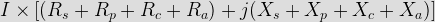
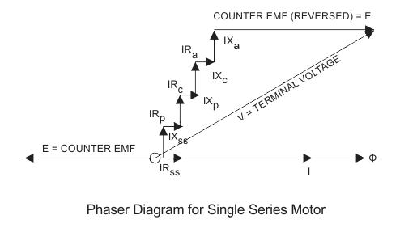
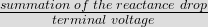
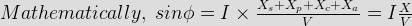
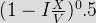
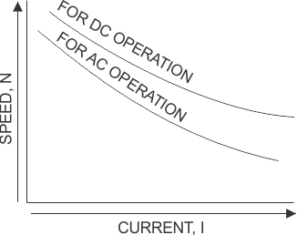
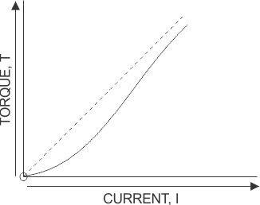
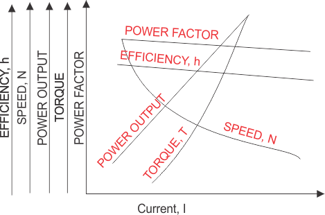

Rs to represent the resistance of the series field
Rp to represent the resistance of the inter pole circuit
Rc to represent the resistance of the compensation winding
Ra to represent the resistance of the armature circuit
Xs to represent the reactance of the series field
Xp to represent the reactance of the inter pole circuit
Xc to represent the reactance of the compensation winding
Xa to represent the reactance of the armature circuit
I to represent the current in the circuit
Φ to represent the flux produced by the current I
We have assumed that the flux produced by the current I is in phase with the current I due very small lagging angle. On taking the current on the reference axis we have terminal voltage equals to summation of all the voltage drops and the counter emf. We have summation of the voltage drops equal

The main advantage of the phasor diagram of the ac series motor is that we can easily obtain the phase angle for counter emf E with the help of phasor diagram. Given below is the phasor diagram for the ac series motor.

Now let us discuss various characteristics of the ac series motor. There are five important characteristics of an ac series motor which are written below:
(a) Power factor characteristics
(b) Speed current characteristics
(c) Torque current characteristics
(d) Torque speed characteristics
(e) Power output characteristics
Now let discuss each of them in detail:
Power factor characteristics
We can derive the expression for power factor with the help of phasor diagram given above. From the phasor diagram we write sine of angle φ as


From this we can write the expression for power factor is equal to . Clearly from the above equation we can say that if we want the high value of power factor, the value of reactance and counter emf should low as minimum as possible. From point of view of loading, we have low value of power factor at over loading and it is due to the fact that the high value of current. Thus the high value of power can be achieved only if the load is very light.
Speed current characteristics
In order to the understand speed current characteristic let us derive an expression for speed in terms of counter emf. We have a proportional relationship between the counter emf and speed of the motor. Thus if the value of the counter emf is large then the value of speed will be more. From the phasor diagram we can say that the counter emf is equal to the difference between the terminal voltage and the voltage drops. Hence if current cause’s higher voltage drops then the generated back emf will be less therefore the speed of the motor will be less. Now let us analyse and compare speed current characteristics for both ac and dc series motor. Let us first consider the case of dc series motor: In case of dc series motor we have high value of counter emf because the value of voltage drop here is small. The voltage drops here is due to resistive drops mainly therefore the value of voltage drop is low. Now Let us consider the case of ac series motor: In case of ac series motor we have a low value of counter emf because the value of voltage drop here is large. The voltage drops here is due to resistive drops and reactance drop therefore the value of voltage drop is high. It means the speed current characteristics curve for the dc series are less dropping than the ac series motor. Given below are the characteristics for both the ac and dc series motor.
Torque current characteristics
After neglecting the small value of phase angle (angle between the flux and the current) and saturation effect we can say that the value of the torque is directly proportion to the value of square of the current. Therefore the variation of torque with the current can plotted as shown in the figure given below:
Torque speed characteristics
The relation between the torque and speed can derived with the help of torque current and speed current characteristics. The torque speed characteristics are plotted as shown in the given diagram.
Power output characteristics
The mechanical output power developed by the ac series motor can be calculated by the product of the counter emf and current. The value of mechanical power developed is directly proportion to the value of the current, if we neglect the decrement in value of the counter emf. The counter emf slightly decreases with the increase in the value of the current.



Now let us discuss some application of ac series motors:
(a) These motors are highly in home appliances like hair dryers, grinders, table fans, polishers and many other kitchen appliances.
(b) These motors are also very useful where high speed control is required like lift etc.
 by
by